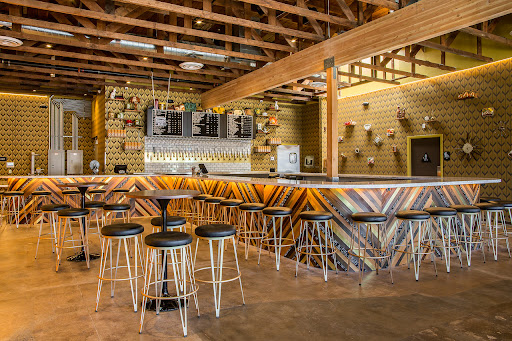
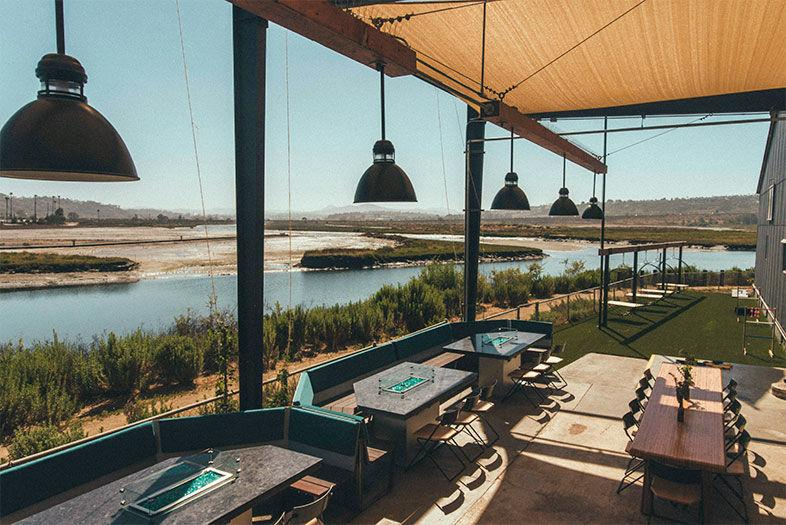

Ideas
Sunday¶
Morning¶
- Fly in
- Get bags
- Get cars
- Call me so I can get a table at Broken Yolk
- Drive to Broken Yolk in Del Mar, 2642 Del Mar Heights Rd, Del Mar, CA 92014.
I recommend their Sope Benedict: Two extra thick and crispy corn tortillas filled with shredded beef and topped with poached eggs, homemade ranchero sauce, sliced avocado, fresh salsa, cotija cheese and sour cream.
Afternoon¶
I was thinking we could hang out at the house in the afternoon and have lunch at either the Sky Deck or One Paseo. Both are nice places to walk around and have various eating options.
Dinner¶
We will make dinner and eat in the backyard. I was thinking of BBQ and a salad and maybe ordering some sides.
Evening Walk¶
At 6:45 pm I would like to go to Torrey Pines beach and walk on the beach to flat rock. Unfortunately the tide is at +4.4 at that time so I'll have to see if our path will be restricted. Walk info: click here
Evening¶
Make smores.
Monday¶
Breakfast¶
I can make eggs and french toast.
Afternoon¶
In my opinion the beaches up north where we live are nicer and less tourists than down south. This may be a good day to chill at Moonlight beach until your check-in time.
If you want to do a hike I recommend the Torrey Pines Extension since it is nice and not full of tourists.
If you want to do a walk I'd recommend parking on 5th street in Del Mar, carefully cross the train tracks, and walk along the tracks south until you get to the path of purple flowers.
!!!+ warn Stay away from the tracks The train moves quick and is very dangerous. Don't spend any time near the tracks. Always walk as far from the tracks as you can safely walk on the bluff (drop off). Also, be careful of the bluffs because they crumble fairly often.

Places to Hang out¶
- One Paseo - Fancy outdoor shopping center next to our house. Nice place to stroll, chill, talk. https://www.instagram.com/onepaseo/
- Sky Deck at Del Mar Highlands - In the shopping center next to our house (across the street from One Paseo) there is another outdoor mall, Del Mar Heighlands. There is a new eatery there called the Sky Deck that has a few restaurants open. Do to the Sky Deck on the top floor and look out over the nice view and order a hard kombucha flight from Booch Craft. If you are hungry order Greek food or a pizza.
- Modern Times Beer Tasting Room - OK, I don't get out much and I don't like IPA so take this recommendation with a grain of salt. I like the vibe of this place. If you are at my house you can go to the one in Encinitas. If you are at the other house you can go in North Park. 
- Karl Strauss Restaurant in Sorrento Mesa - Yes, another beer place... see above. This place is a nice place to talk and have a beer. Beer, beer food, and japanese garden. More
- Viewpoint Brewing - OK, I like beer I just want some dopplebock options. Anyway, this brewery is near my house and has a nice view of the lagoon and the Del Mar Racetrack. Go during a race and they will have the races on the screens. They also have nice fire features and corn hole. Check out the website to see the nice animation showing the surroundings. 
- Family Fun Center - Mini-golf and go-carts. website
Restaurants¶
- Convoy street - Cluster of asian restaurants and other businesses. It's fun to go there, pick out a place, and enjoy. Some good options described here. If you go here we recommend you have desert at Somisomi (Nutella inside) or MNGO cafe #mngocafe.
- Pho Cow Cali - We eat Pho from here every Wednesday. Maybe we can bring it to your house.
Breakfast Restaurants¶
- Morning Glory - Beautiful brunch in Little Italy. See the review.
:format(webp)/cdn.vox-cdn.com/uploads/chorus_image/image/63658816/MorningGlory_29.0.jpg)
Day Trips¶
- Temecula (Wine Country) - An hour drive to our wine country. Might be hot. Map